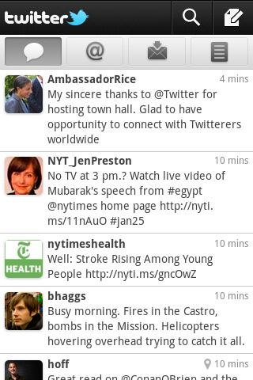
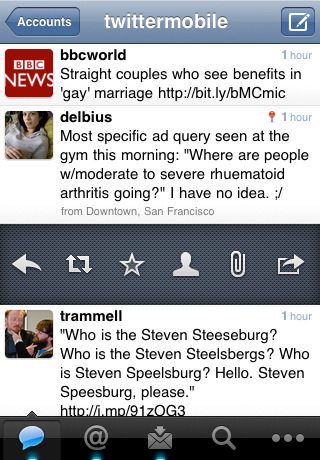
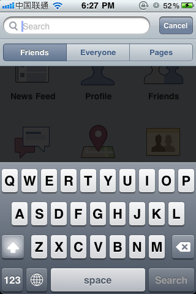

刘洋是街旁的移动产品设计师。他的设计经历非常丰富，包括 t-shirt、海报、书籍和网站。现在他在负责街旁多个移动平台的 app 设计。下面是果合团队和他的访谈记录。
问：你觉得最近移动 app 产品设计的发展方向有什么变化？
从 Instagram开始，就很不一样了。因为这个 app 把图片当成 feed 的主题，就变成了说社交事件是用图片一张一张传下来的，就好像给 Flickr 加上了一个时间线，又像是把 Facebook 的时间线变成了一张一张的图片。图片变成了一个很重要的部分。
我觉得这也符合现在智能手机发展的趋势：现在手机都越来越强大了，拍照是一件很自然的事情。在触屏手机打字都不是很方便的情况下，拍照传图就变成很自然的事情。像后来的 Path 和 Color 都是这一个系列概念的演化。
在街旁的 app 里面，实际上我们也有借鉴 Intstagram 的设计。我们没有做那种传统的地点相册，好像一个图片墙的概念，而是按照时间轴把照片放进去。
问：你之前的设计经历对你现在做移动产品设计有什么影响和帮助？
其实我设计的背景很杂，没有说一开始就专注于某一部分的设计。因为学软件，所以 Ｗeb 设计肯定是很大的一部分，但是也做过平面，比如海报、书籍封面。
传统的设计大部分是给人看的，交互模式比较简单，比如 Web 设计基本上是鼠标点击。移动设计的交互比较多样，比如有手势啊。还要考虑到移动性和网络的问题。如果是 Web 设计，用户会坐在那儿，电脑插着网线，你不需要考虑很多，但是移动设备上的设计，就要考虑到各种异常情况，比如有的时候手机会没有信号，走路的时候用户交互会不那么精准之类的事情。这些都是移动设计要注意的事情。如果一开始从 Web 设计转过来，需要考虑容错性。相对而言，移动设备上交互的可能性会更多。
另外就是移动设备的屏幕。除了尺寸上会有局限之外，也包括硬件平台的差异。比如 Android 上很少有 app 会做下拉刷新（Pull to Refresh）这个交互，而在 iOS 上却很常见。Android 上的刷新率是 20 帧，而 iOS 是 60 帧每秒。Android 不同的硬件配置差异很大。在 iOS 上滚动一个列表，很容易一次滚动到头，而在 Android 上滚动速度和阻尼的变化都很难预期。所在不同的手机上适配会很难。Android 在不同 OEM 的“改进”下，UI 已经变得很“散漫”，所以一个设计放在不同的 Android 手机上可能会不一定适用。
与其说之前的设计经验对我的帮助大不如说是作为一个重度用户的经验对我的帮助大。本身你要去用不同的 app，潜意识里面你要去做对比。当你看到一个 app 做一件事情的时候，你要去想为什么以前的 app 没有做这件事情，而现在这个 app 这样做了，然后以前的 app 是怎么做的。形成一种很自然的对比。在这种前提下，你就能把握 iOS 平台上的 app 是什么样的，哪些东西是好的，哪些是不好的，新的概念出来怎么去避免就的错误。这种对设计进化的思想是要不断的更新，保持自己一直在体验和思考新的东西。
问：你认为在不同的移动平台上进行产品设计的区别是什么？哪一个移动平台上的设计是最舒服的？
我觉得肯定是 iPhone，因为 iPhone 开创了触屏交互的先例。新闻上都会经常说 iPhone 最近注册了一个专利，然后 Android 又要给苹果交专利费。所以你会看到 iPhone 是一个从零开始把交互做起来的平台，而 Android 和 Windows Phone 7 都是在 iPhone 的基础上做一些变化，创造一些不同的东西。你会看到（在 Android 和 Windows Phone 7 的平台上）有一些刻意的或者是修饰性的改变，不是非常自然。
每个交互都会有一个流程。在每个平台上都会有一套导航的模式。做 app 特别是社交类的 app，一定要先定义你的 app 在这个平台上怎么做导航。导航包括哪些？就是每个页面中的信息架构，比如：标题要放在哪里，页面之间如何跳转，这个页面如果有菜单的话要怎么做，这个页面如果要有一些不太重要的东西要把它藏到哪里去。这套东西是在做每一个页面的时候都会遇到的问题，所以要在最先把它搭建起来。在 iOS 和 Android 上的这种差异是非常大的。因为 iOS 没有物理按键，而 Android 上有。这个问题是一直被讨论的，但是我觉得不太会有答案。因为现在 Android 的硬件也不断向 iPhone 的方向发展，硬件越来越好，甚至超过 iPhone 的硬件。所以现在会有越来越多的 iOS 交互搬到 Android 上来，比如：iOS app 上会有一个导航，左边放返回键，右边放功能键。在 Android 上有人会用到下面的菜单按键，也有些人会直接用 iOS 的设计，把按键做到 UI 里面，而不用物理按键。如果把框架想清楚，然后就可以专注在内容上。
所谓的框架就是一种很共通的交互模式。比如在 iPhone 上，除了一些游戏之外，很多 SNS app 都是用同一种框架。如果你选择做一件不一样的事情，就要考虑风险：用户习惯于原有的框架，在新的框架下就可能找不到习惯的交互方式，就会问为什么这个功能被藏起来了。
记得有一句话是说最好的 UI 就是没有 UI，就是让用户感觉不到交互的存在。我觉得最好是在一个用户感觉不到的 UI 的框架下，再去关注内容，就会是对内容一种比较好的提升。
不同平台的差异实际上是一些非常细节的问题。我会把这些差异考虑在框架的设定当中。其实移动 app 的设计都是在一块触摸屏上，很多不一样的东西都是在 OS 的 DNA 中体现的。设计应该尽可能的去贴近这些特性。再说远一点，在设计 app 的时候，尽管不一定要遵循，但是一定要了解并且思考不同系统在用户界面上的 UI Guideline，才能知道有些东西为什么要这么做，才能做取舍。
最近我看了 Android 2.3 的用户界面设计，觉得在新版本上的设计和之前的版本非常不同。代表性的 app 比如 Twitter 和 Facebook 都不一样了。从 UI 上讲，Android 是一个非常自由的系统，所以在设计上会一直有新的变化。其实我感觉这个变化是越来越像 iOS，特别是在导航的设计上。以前的设计是在页面的最上方会有 20 像素是放 app 的名称，现在就会是放 logo 和两个导航按钮，和 iOS 更加类似。此外，整个的设计风格都在向这个方向迁移。我认为这也是因为 Android 更加开放，所以一些大公司会希望自己的 app 在不同的平台上界面更加一致。而现在 Android 手机的性能越来越好，其实在一块液晶屏上的表现在不同的平台上也会越来越接近。

问：对于个人开发者或者小型开发团队，你会对他们在产品设计上有什么建议？
一些小的团队，可能只有两个人，一个人做开发，一个人做设计，可能没有一个人是专门做产品的，其实这样的模式很好。国外一些很不错的 app 设计和开发是由一个人完成的。如果说建议的话，我认为开发者和设计者之间的沟通是第一位的。在设计的时候一定要考虑在技术实现的时候会不会有什么问题。因为团队很小再加上缺乏经验，如果没有很好的沟通，设计出来之后会发现技术实现出来有一些问题是没有考虑到的。最好是能够在每一个设计上都进行充分的沟通，保证每一个想法都是（在技术角度上）“安全的”。越小的团队越要保持这样的沟通，才能提供产品设计和开发的效率。其实即便是像街旁团队的 app 也是这样的双人模式，同样需要这样的沟通。
另外就是要去听用户的意见。当然其中有些是噪音，但是很多人提一个建议的时候，可能就是有价值的。但是作为设计师要会思考和过滤这些意见。如果没有这些思考和过滤，用户提到了一个问题，设计师却没有考虑到这个问题，那么这就是一个需要反思的事情了。用户在很多时候都不会提出需要什么，只会说这样做是不对的，你这样做不好。比如有些页面结构比较复杂，有些按钮的位置不太对，可能点不到，在设计的时候可能没有考虑到，在碰到这样的问题时，可能就是一个把按钮的尺寸放大的解决办法，但是这样做也可能会影响页面其它部分的布局。这时可能就要考虑是不是要重新考虑一种布局，从零开始去思考这个结构是什么，因为有些设计是联动的。
问：你的 iPhone 首屏上都有什么 app？你在设计中会参考什么样的 app？
我的 iPhone 首屏基本保持 Apple 的出厂设置。
因为我做街旁，所以比较多参考的是社交类的 app。我觉得最完美的是 Facebook 的 iOS app。这个 app 把一些别人认为已经达到完美的功能一步一步去升级，让你觉得说我怎么没有想到这个设计，而 Facebook 的改动就越来越好。比如 Facebook 的搜索，会在点击搜索栏之后就显示 3 种可能的搜索分类，而不是让用户在看到大量的搜索结果后再进行筛选。再比如发送新信息的时候，Facebook “启动输入框打开键盘”这件事可以做到非常顺畅没有延时，其它任何主流 app 都没办法做到同样的程度。但 SNS app 的用户可能最常用到的就是发消息，所以这一点点的进步很容易会被察觉到并被认为有价值。

问：你怎么找到这些好的 app 帮助形成设计？
各种科技博客，好的 app 都会被炒的很热，然后就可以在科技博客中发现。但其实大部分好的 app 都是那些比较老的，它们都会不断改进自己的设计，我觉得这种改进才是真正值得学习的东西。我喜欢在一件事情上反复思考，不断的改变，把设计进化到很好，而不是一拍脑袋想到一个设计。
博客我看得比较多的是 Engadget 和 Core77，这些不一定是谈设计本身，但是可能会有很多想法上的帮助，包括 TechCrunch 都会经常看。
问：你用什么软件和硬件完成设计工作？你的梦幻配置是什么？
- MacBook Pro 15-inch。Mac 的屏幕色彩比较准，我觉得对设计来讲很重要的是屏幕的颜色，我觉得这个屏幕还没有很好，我希望有更好的屏幕。
- Razer Deathadder。我用鼠标只有一个标准，就是这个鼠标要很大，贴我的手
- Photoshop CS5。但是我觉得应该更多的用 Illustrator 和 Fireworks 做，因为现在 iOS 和 Android 的屏幕分辨率都越来越高，所以应该有矢量的输出，更容易改变尺寸。
- Windows 7 + Microsoft Word。编辑文档的时候，万不得已我不会用 Mac，因为要考虑对方大部分用 Windows 打开的时候，看到的格式字体是不是一致，而且 Office for Mac 太烂了。
- Gmail 用来收发邮件
- Skype 和 iChat 作为即时通讯工具。但是我不喜欢新版 Skype for Mac 在UI上的改变，变的很笨重。我也尝试过用 Adium 之类的 IM 聚合软件，但现在觉得把各个群体都整在一起并不适合我当下的使用需求。
梦幻配置的话就是全部都是固态硬盘吧，我讨厌等待，我想如果有固态硬盘我可以提高一倍的设计效率。